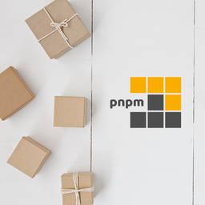

pnpm Blog
https://pnpm.io/blog
Fast, disk space efficient package manager
フィード

pnpm 12.9.0
pnpm Blog
This release runs pnpm in StackBlitz WebContainers, adds a per-registry networkConcurrency setting, and records every installed project in the store. It also carries a security fix for pnpm login.
2日前
pnpm 12.8.2
pnpm Blog
pnpm 12.8.2 fixes a startup crash on Linux ppc64le and UnknownIssuer errors on systems without CA certificates. pnpm run no longer installs before every script on CI when autoDedupe is enabled, and resolution and hoisted installs on macOS are faster.
4日前
pnpm 12.8 1
1
pnpm Blog
pnpm 12.8 warns when pnpm pack or pnpm publish would ship a .env file, installs sharedWorkspaceLockfile: false workspaces concurrently, applies every setting passed as --config.=, and no longer leaves the Windows terminal stuck after Ctrl+C in a script. This release also carries a...
6日前

pnpm 12.7
pnpm Blog
pnpm 12.7 lets the global node shim follow .nvmrc and .node-version, adds pnpm install --allow-build and pnpm publish --publish-wait-timeout, and creates pnpm-workspace.yaml from the workspaces field of package.json. pnpm install --force no longer installs optional dependencies built for other...
9日前
pnpm 11.28
pnpm Blog
pnpm 11.28 adds the forceIgnoresPlatform setting and pnpm update --peer, and brings a large batch of fixes from pnpm 12 to the JavaScript CLI: pnpm deploy, --filter, nodeLinker: hoisted, and custom modulesDir setups all behave better. It also carries security fixes for shell completion, bin...
9日前
pnpm 12.6
pnpm Blog
pnpm 12.6 ships with automatic dependency deduplication, relocatable node_modules, --save-types for installing @types/* packages alongside their counterparts, package.yaml manifest editing, and file: / link: protocols in catalogs.
12日前
pnpm 12.5
pnpm Blog
pnpm 12.5 expands Python support with editable project packages, shared workspace environments, automatic interpreter downloads, and lockfiles for multiple platforms and Python versions. It also accepts Package URLs in pnpm add, adds machine-wide task concurrency groups, and cleans up obsolete...
16日前
pnpm 12.4
pnpm Blog
pnpm 12.4 installs crates and Python packages next to npm packages in the same workspace, adds pnpm pipeline to run a workspace's tasks the way a CI job would, and ships binaries for six more platforms. pnpr 0.1.0-alpha.11, released alongside 12.4.1, serves Cargo, Python, and container...
24日前
pnpm 11.26
pnpm Blog
pnpm 11.26 brings the JavaScript CLI level with what pnpm 12 gained over the past two weeks: workspace: ranges in catalogs, the supply-chain flags on remove and update, pnpm change check for CI, and pnpm deploy without injected dependencies.
1ヶ月前
pnpm 12.2-12.3
pnpm Blog
pnpm 12.2 and 12.3 are largely a catch-up pair: a long list of things pnpm 11 did that the Rust CLI did not, put back. Catalogs learned the workspace: protocol, pnpm remove and pnpm update gained the supply-chain flags, every project-aware global command became a real executable, and hostname...
1ヶ月前
pnpm 12.1
pnpm Blog
pnpm 12.1 brings the new workspace task scheduler to the Rust CLI, persists successful recursive tasks for precise retries, expands shared build artifacts to macOS and Windows, and moves login credentials into pnpm's structured global configuration. pnpr 0.1.0-alpha.9, released with it, makes...
1ヶ月前
pnpm 11.25
pnpm Blog
pnpm 11.25 replaces topological batches with a task scheduler, adds configurable workspace task dependencies and per-task concurrency, and makes interrupted recursive runs resumable from the work that actually passed. It also introduces registry revisions, signed build artifacts shared through...
1ヶ月前
pnpm 12.0
pnpm Blog
pnpm 12 is stable. It is a rewrite of pnpm in Rust. Upgrading should not feel like a migration. The documentation now defaults to pnpm 12, with the pnpm 11 documentation available from the version selector.
1ヶ月前
pnpm 11.24
pnpm Blog
pnpm 11.24 brings back pnpm approve-builds --global, which isolated global installs took away in v11.0, and makes recursive batch publishing group its packages by registry so a credential mismatch is caught before anything is published. It also stops --frozen-lockfile from failing over the pnpm...
1ヶ月前
pnpm 11.23
pnpm Blog
pnpm 11.23 gives the registries setting a shape that describes each registry once — its tarball layout, the scopes routed to it, the prefix it answers to — so an Artifactory or GitLab registry can finally keep its tarball URLs out of pnpm-lock.yaml. It adds virtualStoreType, makes undeclared...
1ヶ月前
pnpm 11.21-11.22
pnpm Blog
pnpm 11.21 and 11.22 teach pnpm install to update the lockfile in place for most everyday changes instead of re-resolving the whole dependency graph, stop recording SSH URLs that break installs on CI, make global installs switch over atomically and global interactive updates select whole install...
2ヶ月前
What's different in pnpm 12
pnpm Blog
pnpm 12 is a rewrite of pnpm in Rust, and it is stable. Upgrading should not feel like a migration. Apart from the differences below, it keeps the commands, flags, settings, and lockfile format of pnpm 11, and the documentation applies to both versions.
2ヶ月前
pnpm 11.20
pnpm Blog
pnpm 11.20 fixes a package-substitution risk in projects that install from more than one registry: packages resolved from a named registry are now recorded in the lockfile under registry-qualified keys. It also adds a built-in npmjs: alias, stops empty proxy settings from failing installs,...
2ヶ月前
pnpm 11.15-11.19
pnpm Blog
pnpm 11.15 through 11.19 teach pnpm update and pnpm outdated to update GitHub Actions, let pnpm update write changesets for the bumps it makes, introduce cleaner update and audit settings sections, add publishConfig.name for publishing a package under a different name, harden pnpm self-update...
2ヶ月前
pnpm 11.11-11.14
pnpm Blog
pnpm 11.11 through 11.14 add native workspace release management (pnpm change, pnpm lane, and a bare pnpm version -r), a pnpm doctor command that diagnoses your installation end to end, the pnpm access and pnpm team commands for managing packages and organizations on the registry, convergence...
3ヶ月前